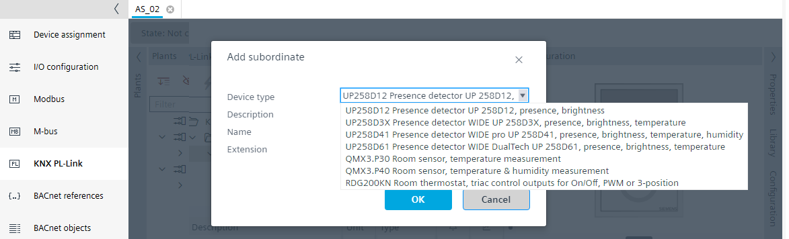
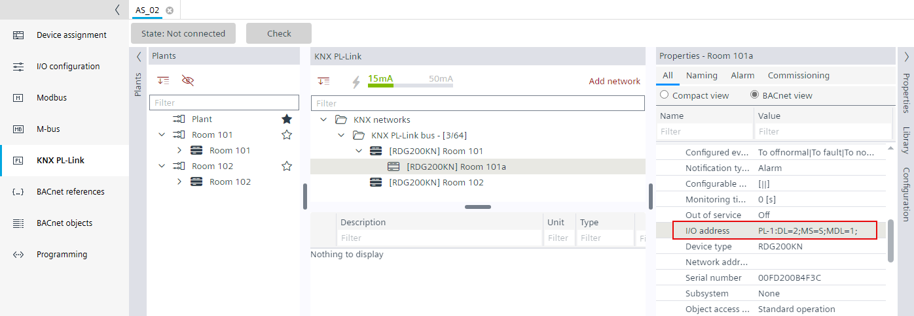

添加 RDG2 从属设备
- A RDG2 manager device is available.
- A RDG200KN, RDG204KN, RDG260KN, RDG264KN KNX PL-Link device must be configured.
- In the KNX PL-Link area, select the RDG2 manager device.
- Right-click the device and select Add subordinate.
- The Add subordinate dialog box opens.
- In the Add subordinate dialog box, select the compatible subordinate device.

- Change the description and extension as needed, for example, Room 101a.
- Click OK.
- A RDG2 subordinate device is added.
- Repeat these steps according to the project requirements.
Note: The maximum number of subordinates per manager is limited to 9 devices. - The RDG2 subordinate devices are added.
- (Optional) If the subordinate device controls a different zone than the manager device, the zone parameter must be adjusted. An additional zone demand signal is then created.

Configuring the RDG2 heating/cooling coil demand with zones
Adapting the RDG2 device chart for heating/cooling demand - Check the subordinate RDG2 I/O address in the Properties view > BACnet view, for example,
PL-1:DL=1;MS=S;MDL=1;(S for subordinate, MDL for subordinate number)

对于 RDG2 设备，从属设备的参数与管理设备同步。